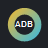
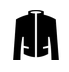

AltyaziDB Arr Bridge
Configure local Radarr, Sonarr, Prowlarr, and Jackett lookup behavior.
Radarr
Base URL
API key
Test Radarr
Load Radarr folders/profiles
Root folder path
Quality profile
Choose a profile after loading choices
Minimum availability
Released
In cinemas
Announced
Sonarr
Base URL
API key
Test Sonarr
Load Sonarr folders/profiles
Root folder path
Quality profile
Choose a profile after loading choices
Series type
Standard
Anime
Daily
Use season folders
Prowlarr
Base URL
API key
Search result limit
Show Prowlarr search button on AltyaziDB pages
Test Prowlarr

Jackett
Base URL
API key
Indexer (use "all" for every enabled tracker)
Search result limit
Show Jackett search button on AltyaziDB pages
Test Jackett
Behavior
Open search page
Use API lookup when possible, then open the matching Arr page.
Show popup results
Keep you on AltyaziDB and show the best local lookup matches.
Auto-add
Add to Radarr/Sonarr only after root folder and profile are configured.